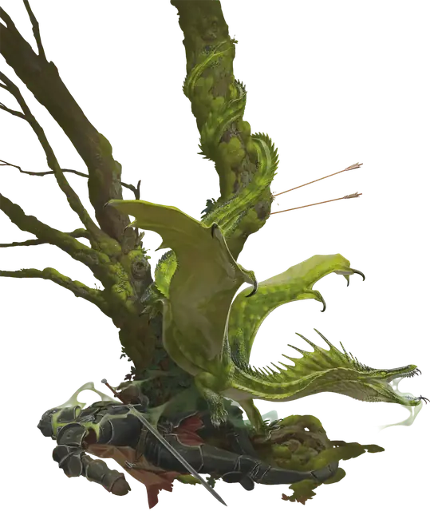

Вирмлинг зеленого дракона
Green Dragon Wyrmling
Средний Дракон (Цветной), Принципиальный Злой

Класс Защиты 17 Инициатива +3 (13)
Хиты 38 (7к8 + 7)
Скорость 30 футов, Плавания 30 футов, Полёта 60 футов
| мод | спас | ||
|---|---|---|---|
| СИЛ | 15 | +2 | +2 |
| ЛОВ | 12 | +1 | +3 |
| ТЕЛ | 13 | +1 | +1 |
| мод | спас | ||
|---|---|---|---|
| ИНТ | 14 | +2 | +2 |
| МДР | 11 | +0 | +2 |
| ХАР | 13 | +1 | +1 |
Иммунитеты Яд; Отравленный
Чувства Тёмное зрение 60 футов, пассивное Восприятие 14, Слепое зрение 10 футов
Языки Драконий
Опасность 2 (450 опыта; БВ +2)
Особенности
Амфибия. Вирмлинг зеленого дракона может дышать как воздухом, так и под водой.
Действия
Мультиатака. Дракон совершает две атаки Раздиранием.
Раздирание. Бросок рукопашной атаки: +4, досягаемость 5 фт. Попадание: 7 (1к10 + 2) Рубящего урона плюс 3 (1к6) урона Ядом.
Ядовитое дыхание (Перезарядка 5–6). Спасбросок Телосложения: Сл 11, каждое существо в 15-футовом Конусе. Провал: 21 (6к6) урона Ядом. Успех: Только половина урона.
Бонус мастерства +2
Среда обитания Леса
Сокровища Магические
Зелёные драконы
Драконы хитрости и издёвок
Из глубин запретных лесов зелёные драконы нашёптывают миру зло и манипулируют жизнями тех, кто внемлет им. Эти неуловимые, коварные и эгоистичные цветные драконы терпеливо охотятся за страхами недолговечных существ, развращают и изолируют их. Они могут столетиями скрываться в лабиринтах дикой чащи и избегать других существ. Даже самые преданные последователи могут слышать их голосом в лесу или шёпотом во снах.
Несмотря на свою мощь, большинство зелёных драконов презирают физическое насилие, оставляя сражение своим слугам, и предпочитают заманивать врагов в опасные или выгодные для себя ситуации с помощью хитрости и обмана.
Они собирают «побрякушки», которые служат предметами для вымогательства, например компрометирующие документы, семейные реликвии и важные для других сокровища. С помощью них зелёные драконы создают свои манипулятивные сети.
Вирмлинги зелёных драконов часто являются пешками в интригах взрослых драконов. Тем не менее, наблюдая за старшими сородичами, они учатся искусству манипуляции. Как только змеёныши набирают вес и обзаводятся подручными, они отправляются на завоевание своих собственных владений, преследуя личные амбиции.